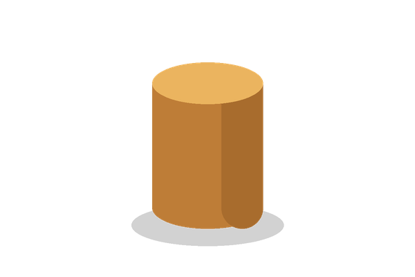

Цилиндрические ёмкости
Описание
Цилиндрическая ёмкость описывается двумя размерами: высотой H и радиусом основания R.

- Достоинства:
- удобно переливать;
- нет углов, поэтому легко мыть.
- Недостатки:
- на полке занимает больше места, чем куб того же объёма.
Как рассчитать объём
- Измерьте радиус основания R и высоту H.
- Найдите площадь основания: S = π·R².
- Умножьте её на высоту: V = π·R²·H.
- Сравните V с объёмом жидкости M на странице «Задача 1007».
Модели
Для справки: 1 л = 1000 см³. Нажмите на миниатюру, чтобы открыть изображение 600×400 в новом окне.
| Модель | Фото | Размеры | Объём π·R²·H | Ссылки |
|---|---|---|---|---|
| Цилиндр S | H = 20 см, R = 5 см | ≈ 1,57 л | Заказать | |
| Цилиндр M | H = 30 см, R = 10 см | ≈ 9,42 л | Заказать | |
| Цилиндр L | H = 40 см, R = 15 см | ≈ 28,27 л | Заказать |